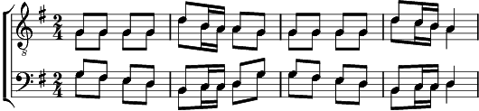

1. Quand les moutons sont à l'étable,
Quand les poules sont au perchoir
Le dos au feu, le ventre à table
Près d'un ami j'aime à m'asseoir.
Refrain:
Si Dieu nous défendait de boire
Aurait-il fait le vin si bon ? Non
Si l'eau nous pousse à l'humeur noire,
Le vin dissipe notre ennui, oui
Allons donc, allons donc, (bis)
Allons donc, allons donc, (bis)
Allons donc, buvons donc,
Si Dieu nous défendait de boire,
Allons donc, allons donc,
Aurait-il fait le vin si bon ?
Si Dieu nous défendait de boire,
Aurait-il fait le vin si bon ?
Non non non, non non non, non non non,
non non non, non non non, non non non
Non Non Non Non
2. Quand j'ai soif, j'ai l'esprit morose
Je suis stupide, gauche et poltron
Quand j'ai bu, je vois tout en rose,
Quand j'ai bu, je suis un luron.
Refrain
3. N'importe comment il se nomme,
Vive le vin rose, rouge ou bleu
Quand j'ai soif, je suis moins qu'un homme,
Quand j'ai bu, je suis presqu' un dieu.
Refrain